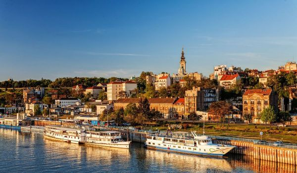

Recorriendo Serbia
Serbia es un país situado en el sureste de Europa, en la región de los Balcanes. Es una nación con una historia muy antigua, una cultura rica, paisajes naturales impresionantes y una identidad nacional muy marcada. Se caracteriza por la combinación de tradiciones orientales y occidentales, ciudades históricas, monasterios medievales, montañas, ríos y una vida social muy activa.

Serbia es un país que ha atravesado numerosos cambios políticos, guerras, transformaciones territoriales y períodos de gran importancia histórica. A pesar de las dificultades de su pasado, ha logrado conservar una cultura propia y una fuerte identidad que se manifiesta en su idioma, su música, su gastronomía, sus costumbres y su forma de vida.